Je suis Professeure à INSA Rennes, chercheuse à l'IETR et membre de l'Institut Universitaire de France IUF. Mes recherches portent sur l'électromagnétisme, les antennes et les dispositifs innovants pour les applications spatiales, radar et de télécommunication.
Ingénieure en télécommunications et titulaire d'un master en pédagogie, j'ai commencé mon parcours comme enseignante de mathématiques dans le secondaire en Espagne. Cette double formation m'a permis de réunir mes deux passions : la recherche et la transmission des connaissances. Arrivée à l'INSA Rennes en 2015, j'ai rejoint l'IETR et j'anime l'équipe de recherche SurfWAVE depuis 2019.
À travers mes activités de recherche, d'enseignement et d'encadrement, je cherche à créer un environnement fondé sur la curiosité, la bienveillance et la collaboration. Au fil des années, j'ai pris conscience de l'importance de promouvoir la diversité dans la science et l'ingénierie. Cette conviction guide ma façon de travailler, de diriger mon équipe et de participer à des initiatives favorisant une recherche plus inclusive, au service de technologies responsables capables de préserver la richesse et la diversité de notre planète.
I am Professor at INSA Rennes, researcher at the IETR, and member of the Institut Universitaire de France IUF. My research focuses on electromagnetics, antennas and innovative electromagnetic devices for space, radar and telecommunication applications.
Trained as a telecommunications engineer and holding a master's degree in pedagogy, I began my career as a mathematics teacher in secondary education in Spain. This combination of engineering and education allowed me to bring together my two passions: research and knowledge transmission. I joined INSA Rennes in 2015, became a member of the IETR, and have been leading the SurfWAVE research team since 2019.
Through research, teaching and mentoring, I aim to foster an environment based on curiosity, care and collaboration. Over the years, I have become increasingly aware of the importance of promoting diversity in science and engineering. This commitment influences the way I work, lead my team and engage in initiatives supporting a more inclusive research community, contributing to the development of responsible technologies that help preserve the richness and diversity of our planet.
2026
- Présentation du projet TREMPLIN au Higher Education Summit 2026 , consacré à l’éducation transformatrice et décolonisée pour la durabilité. Projet d’innovation pédagogique financé par IRIS-E , et mené en collaboration avec LFPC et CREAD . Presentation of the TREMPLIN project at the Higher Education Summit 2026 , dedicated to transformative and decolonised education for sustainability. This pedagogical innovation project is funded by IRIS-E and carried out in collaboration with LFPC and CREAD .
- Notre article de vulgarisation consacré au NewSpace est paru dans la revue INTERFACE INSA Alumni . Our outreach article on NewSpace was published in INTERFACE INSA Alumni .
- Participation à Researchers at Kindergarten, avec six ateliers de vulgarisation scientifique sur la lumière ainsi que les champs électriques et magnétiques destinés à des enfants de 4 à 6 ans. Voir l'intervention . Participation in Researchers at Kindergarten, delivering six outreach workshops on light and on electric and magnetic fields for children aged 4 to 6. Voir l'intervention See the intervention
- Participation à la table ronde du 60e anniversaire de l'INSA Rennes, « Former les ingénieur·es pour une transition juste » ( vidéo ). Participation in the round table celebrating the 60th anniversary of INSA Rennes, "Educating engineers for a just transition" ( video ).
- Séminaire scientifique invité à l'EPFL , « From Research to Space: Experiences Connecting Academia and Industry in Europe ». Invited seminar at EPFL , "From Research to Space: Experiences Connecting Academia and Industry in Europe".
- Publication de notre article "Dual-Polarized Array of Triangular Leaky-Wave Antennas for Compact Water Radar Instruments" sur IEEE Xplore, dans le cadre de la thèse d'E. Rahault. Publication of our paper "Dual-Polarized Array of Triangular Leaky-Wave Antennas for Compact Water Radar Instruments" on IEEE Xplore, as part of E. Rahault's PhD research.
- Participation à la Journée Filles, Maths et Informatique organisée à l'ENSAI afin d'encourager les jeunes filles à s'engager dans les sciences et l'ingénierie. Participation in the Girls, Mathematics and Computer Science Day at ENSAI to encourage young women to pursue studies in science and engineering.
2025
- ✨ Lauréate des Trophées Valorisation 2025 , prix Numérique – électronique, photonique, IA et cyber, pour les travaux sur des antennes intelligentes, modulables et reprogrammables à distance. ✨ Recipient of the 2025 Innovation Valorization Awards , in the category Digital – Electronics, Photonics, AI and Cybersecurity, for research on smart, modular and remotely reconfigurable antennas.
- ♀️ Invitée par l'éditrice de la rubrique Women in Engineering de IEEE Antennas and Propagation Magazine, j'ai eu le plaisir d'écrire The Place I Want to Be , une réflexion personnelle sur le métier de chercheuse, les rencontres qui nous façonnent et les valeurs qui donnent du sens à notre parcours. ♀️ Invited by the editor of the Women in Engineering column of IEEE Antennas and Propagation Magazine, I had the pleasure of writing The Place I Want to Be , a personal reflection on being a researcher, the people who shape our journey, and the values that give meaning to our work.
-
Participation à l'organisation des sessions
Women in Engineering (WIE) et
Diversity & Inclusion de la conférence
IEEE ISAP 2025 (Fukuoka, Japon), avec une présentation et la co-animation d'une session réunissant des chercheuses et ingénieures du Japon, de Chine, de Malaisie, d'Inde et d'Espagne, issues du monde académique, de l'industrie et d'organismes nationaux de recherche, afin de promouvoir la diversité et l'inclusion dans la communauté Antennes & Propagation.
Member of the organizing committee for the
Women in Engineering (WIE) and
Diversity & Inclusion sessions at
IEEE ISAP 2025 (Fukuoka, Japan), including an invited presentation and co-chairing a panel bringing together leading researchers and engineers from Japan, China, Malaysia, India and Spain, representing academia, industry and national research organizations, to promote diversity and inclusion in the Antennas & Propagation community.
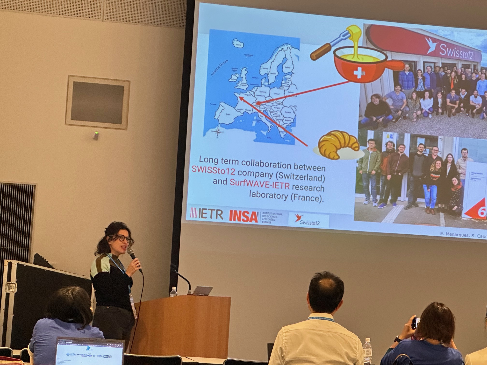
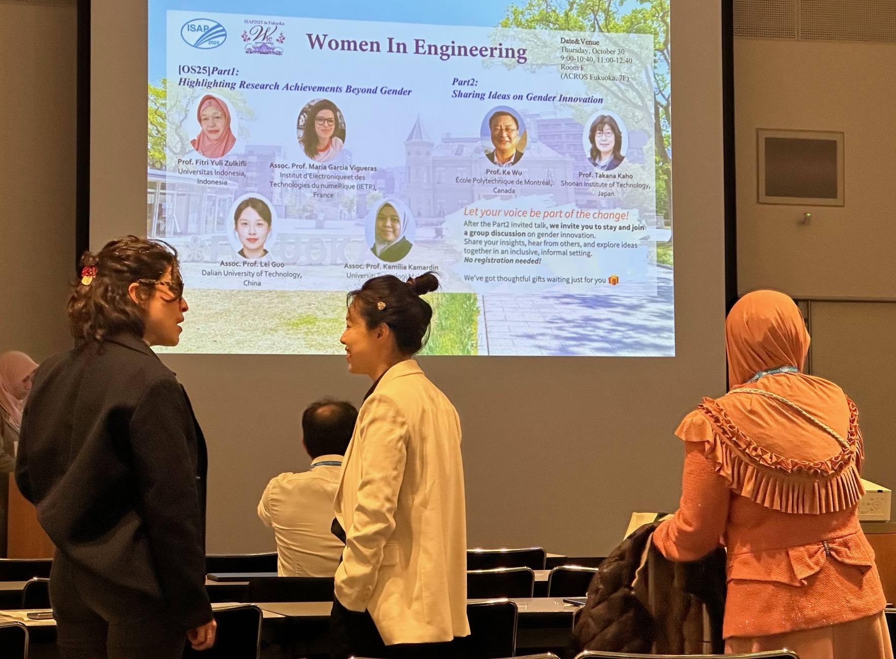
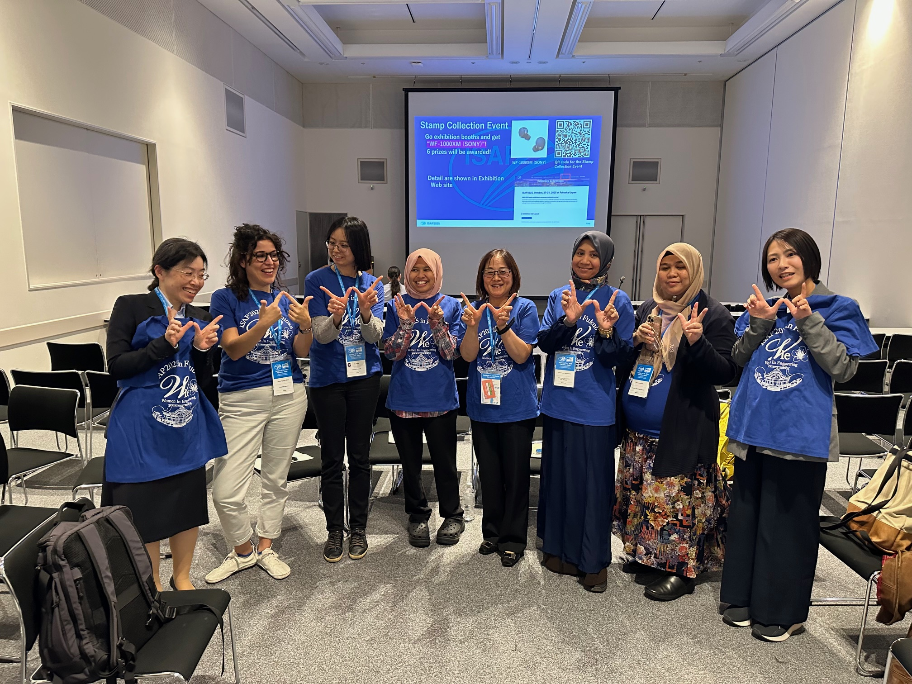
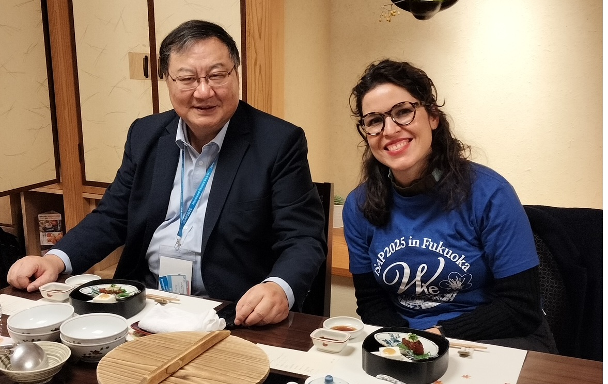
-
Participation à la Journée Filles, Maths et Informatique organisée à l'INSA Rennes afin de promouvoir les sciences et les métiers de l'ingénieur auprès des lycéennes.
Participation in the Girls, Mathematics and Computer Science Day at INSA Rennes to promote science and engineering careers among high-school girls.
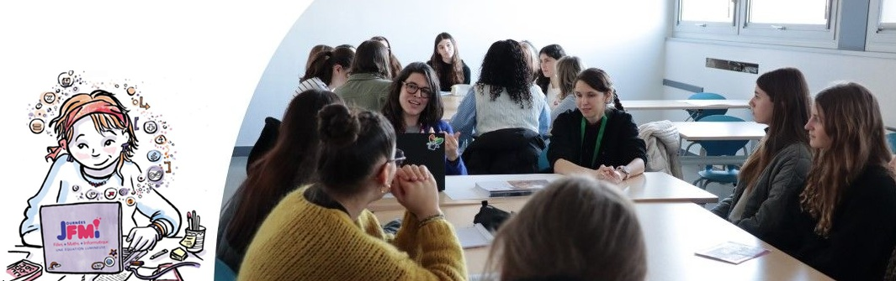
-
Cours invité de deux heures lors de l'Active Antenna Workshop de l'Agence spatiale européenne (ESA). Mon cours concernait les antennes imprimées en 3D pour les satellites en orbite basse (LEO). Workshop organisé dans le cadre de la European School of Antennas (ESoA).
Invited two-hour lecture at the Active Antenna Workshop of the European Space Agency (ESA). My seminar concerned 3D-printed antennas for Low Earth Orbit (LEO) satellites. The workshop was organized as part of the European School of Antennas (ESoA).
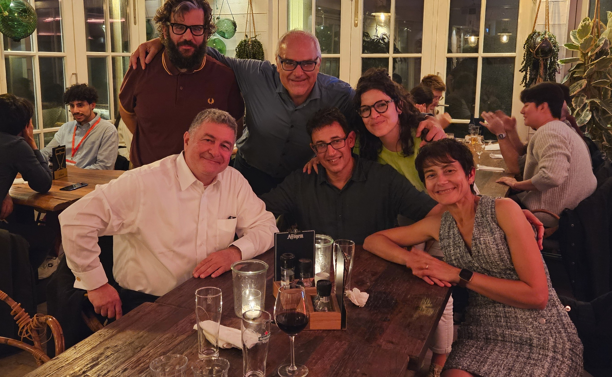
De gauche à droite : Dr E. Menargues (SWISSto12), Prof. G. Rebeiz (États-Unis), Dr G. Toso (ESA), Prof. A. Neto (TU Delft), María García Vigueras et Prof. S. Monni (TNO), enseignants du workshop. From left to right: Dr E. Menargues (SWISSto12), Prof. G. Rebeiz (USA), Dr G. Toso (ESA), Prof. A. Neto (TU Delft), María García Vigueras, and Prof. S. Monni (TNO), instructors of the workshop.
2023
- ✨ Lauréate du EuMA Prize , récompensant chaque année de jeunes ingénieur·es particulièrement prometteur·ses. ✨ Recipient of the EuMA Prize , awarded annually to outstanding young engineers.
Pour moi, la recherche, l'enseignement et le dialogue avec la société sont indissociables. La recherche nourrit mon enseignement, l'enseignement nourrit ma recherche, et tous deux trouvent leur prolongement naturel dans des actions destinées à partager les connaissances au-delà du monde académique. À travers des conférences, des ateliers, des ressources pédagogiques ou des initiatives en faveur de la diversité, je souhaite rendre les sciences plus accessibles, plus inclusives et plus inspirantes.
To me, research, teaching, and engagement with society are inseparable. Research enriches my teaching, teaching enriches my research, and both naturally extend beyond academia through activities that share knowledge with society. Through public talks, outreach workshops, educational resources, and initiatives promoting diversity, I aim to make science more accessible, more inclusive, and more inspiring.
☕ Researchers & Roosters
☕ Researchers & Roosters
Notre cycle de séminaires d'animation scientifique. Cliquez sur une image pour l'agrandir.
Our scientific seminar series. Click an image to expand.
📸 Interventions en milieu scolaire
📸 School Interventions
Retrouvez les photos de nos ateliers. Cliquez sur une couverture pour dérouler la galerie, puis sur les photos pour les agrandir.
Find the pictures from our workshops. Click a cover to unfold the gallery, then on photos to enlarge.
Scientist at Kindergarten
Scientist at Kindergarten
03/07/2026 • Oscar Leroux
.png)
 - English.png)
.png)
 - English.png)
.png)
.png)
.png)
.png)
.png)
.png)
.jpg)
.jpg)
.jpg)
.jpg)
Nos différentes fiches pédagogiques
Our Different Educational Cards
Lasers & BallonsLasers & Balloons
Optronique & Thermodynamique : Absorption thermique vs réflexion lumineuse.
Optronics & Thermodynamics : Thermal absorption vs reflection.
Prisme & Ombres ColoréesPrism & Colored Shadows
Optique Géométrique : Décomposition spectrale par prisme K9 et synthèse RVB.
Geometric Optics : Light dispersion via a K9 prism and RGB color mixing.
Le Train MagnétiqueThe Magnetic Train
Électromagnétisme : Moteur homopolaire et Force de Laplace.
Electromagnetism : Homopolar motor utilizing Laplace force.
Force ÉlectrostatiqueElectrostatic Force
Triboélectricité : Arrachement d'électrons et lévitation électrostatique.
Triboelectricity : Electron transfer causing electrostatic levitation.
Téléphone à LumièreLight Telephone
Optoélectronique : Modulation audio d'une LED haute vitesse (Li-Fi).
Optoelectronics : Audio modulation of a high-speed LED (Li-Fi).
Filtres & PolarisationFilters & Polarization
Biréfringence & Photoélasticité : Extinction par filtres croisés à 90°.
Birefringence & Photoelasticity : Light extinction via 90° crossed polarizers.
⚙️ Manuels d'Installation (Logistique & Montage)
⚙️ Setup Manuals (Logistics & Assembly)
Guides pas à pas pour les démonstrateurs et l'alignement des équipements.
Step-by-step guides for technical setup and equipment alignment.
🧸 Fiches Pédagogiques (Écoles Maternelles)
🧸 Educational Cards (Kindergarten Level)
Explications vulgarisées, schémas simples et visuels adaptés au très jeune public.
Simplified explanations and visual diagrams tailored for young children.
Je suis membre de l'équipe de recherche SurfWAVE, du laboratoire Institut d'Électronique et des Technologies du numéRique (IETR), rattaché à l'INSA Rennes. Nos activités de recherche portent sur les ondes électromagnétiques, les surfaces périodiques et quasi-périodiques, ainsi que sur la conception et le contrôle de dispositifs innovants pour des applications dans les domaines spatial, radar et télécommunications. À l'interface entre recherche, innovation technologique et formation des ingénieur·es. SurfWAVE développe une recherche collaborative avec des partenaires académiques et industriels. Découvrez davantage nos activités scientifiques ici: page de l'équipe SurfWAVE sur le site de l'IETR .
I belong to the SurfWAVE research team, which is part of the Institute of Electronics and Digital Technologies (IETR), affiliated with INSA Rennes. Our research activities focus on electromagnetic waves, periodic and quasi-periodic surfaces, and the design and control of innovative electromagnetic devices for applications in space, radar and telecommunications. At the crossroads of research, technological innovation and engineering education. SurfWAVE develops collaborative research activities with academic and industrial partners. More information about our scientific activities can be found here: SurfWAVE team webpage on the IETR website .
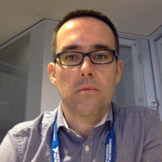
Erwan Fourn
Maître de Conférences Associate Professor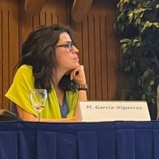
María García Vigueras
Professeure des Universités Full ProfessorResponsable d'équipe
Team head
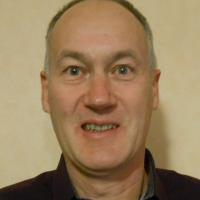
Raphaël Gillard
Professeur des Universités Full Professor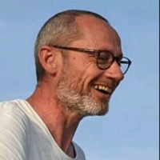
Renaud Loison
Professeur des Universités Full Professor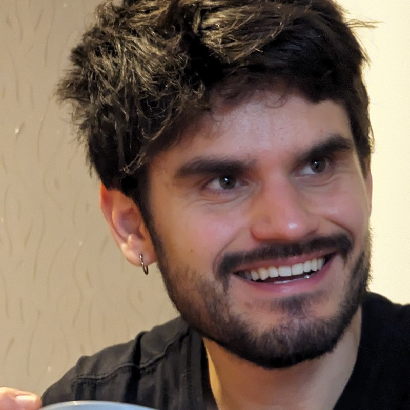
Lucas Polo López
Ingénieur de Recherche (membre associé) Research Engineer (associated member)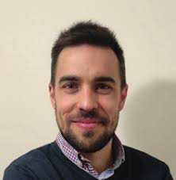
Jorge Ruiz García
Enseignant-ChercheurAssociate Professor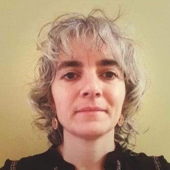
Lise Trégloze
Ingénieure pédagogique · Chercheuse CREAD associée Educational Engineer · Associate Researcher at CREADÉtudiants et jeuns chercheurs
Students & young researchers

Selim Bircan
Stagiaire Ingénieur Master student INSA RennesTom Guitton
Stagiaire de SecondeHigh School Intern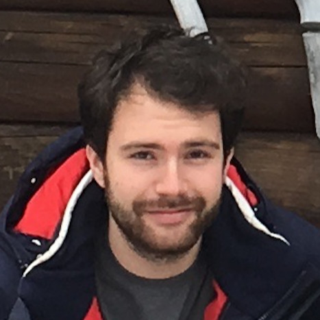
Erwan Rahault
Doctorant PhD Student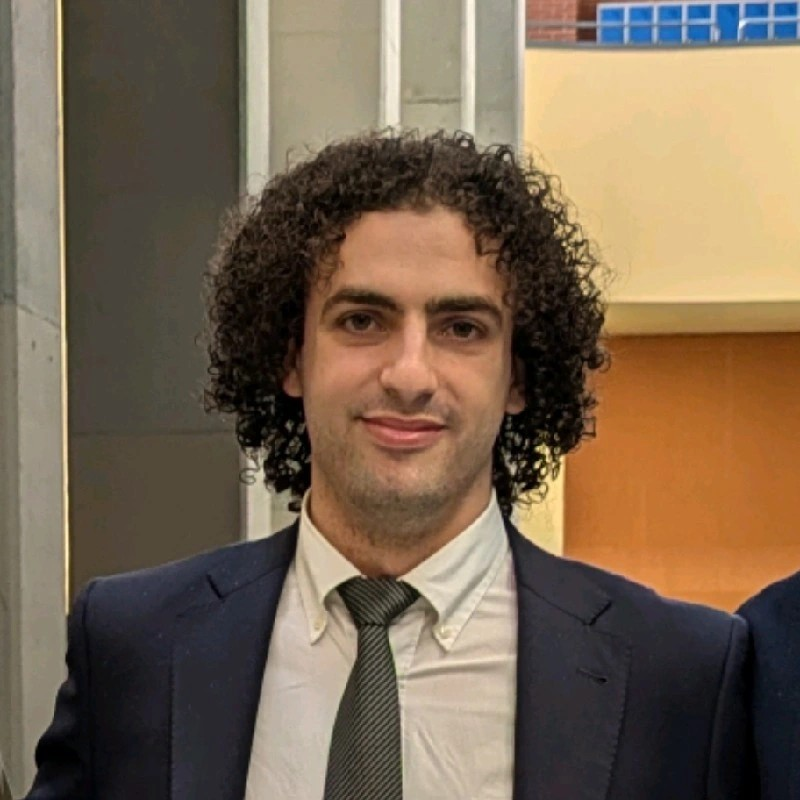
Ginés García Contreras
Post-doctorantPostdoc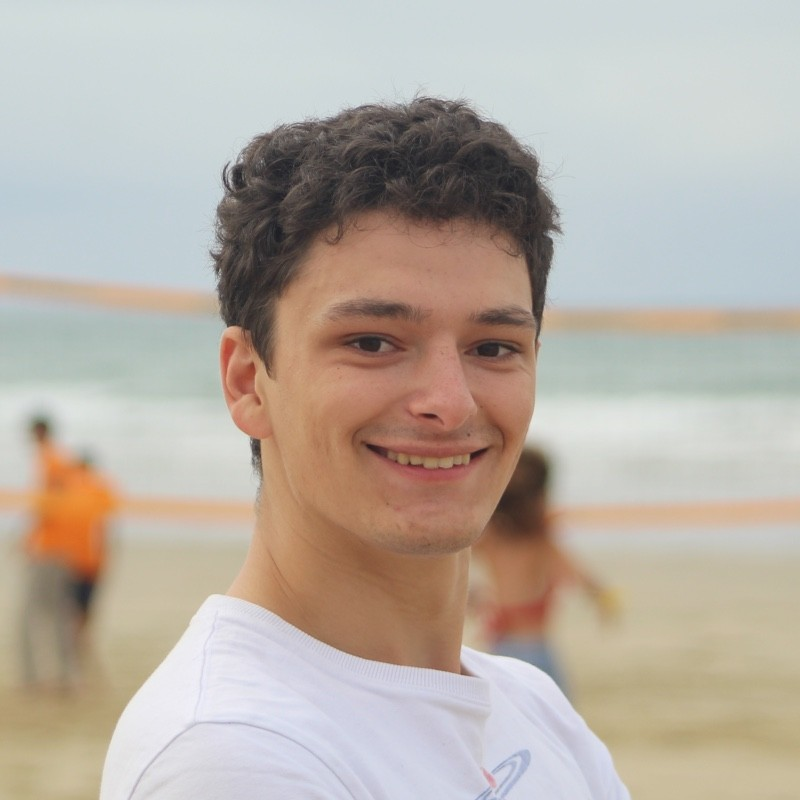
Téo Bulteau
Doctorant PhD Student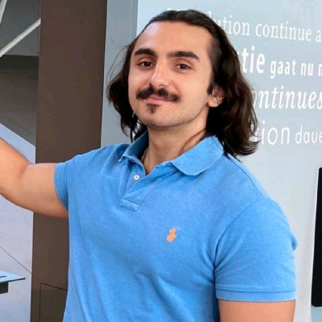
Valentin Lourenço Martins
Doctorant ONERA ONERA PhD Student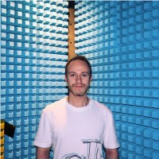
Mats Kohler
Doctorant avec Universidad de Granada PhD Student with Universidad de Granada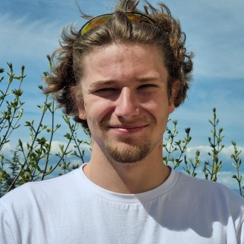
Eloi Fresnel
Doctorant PhD Student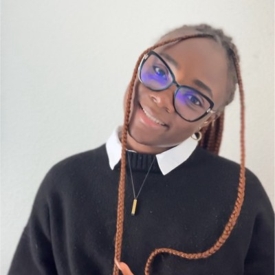
Estelle Eyenga Abate
Doctorante PhD Student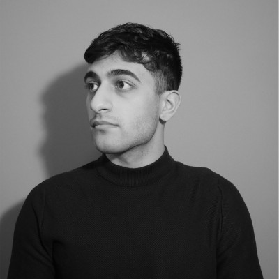
Yuneeb Niazi
Doctorant PhD Student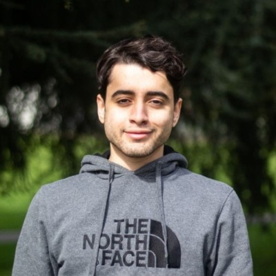
Ramy Bouderbal
Doctorant PhD StudentTéo Nespoulet
Doctorant PhD Student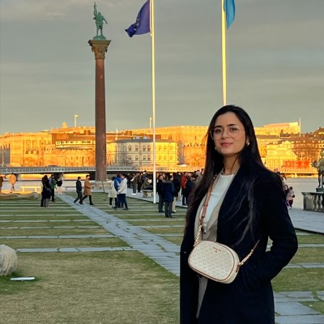
Ikram Dendani
Doctorante PhD Student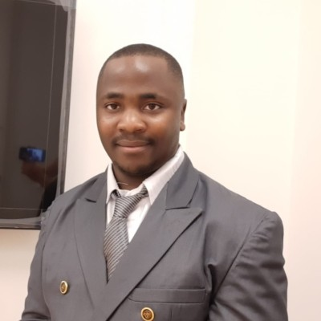
Gildas Ngouana Melachi
Doctorant PhD StudentAnciens Membres de SurfWAVE
Former SurfWAVE members
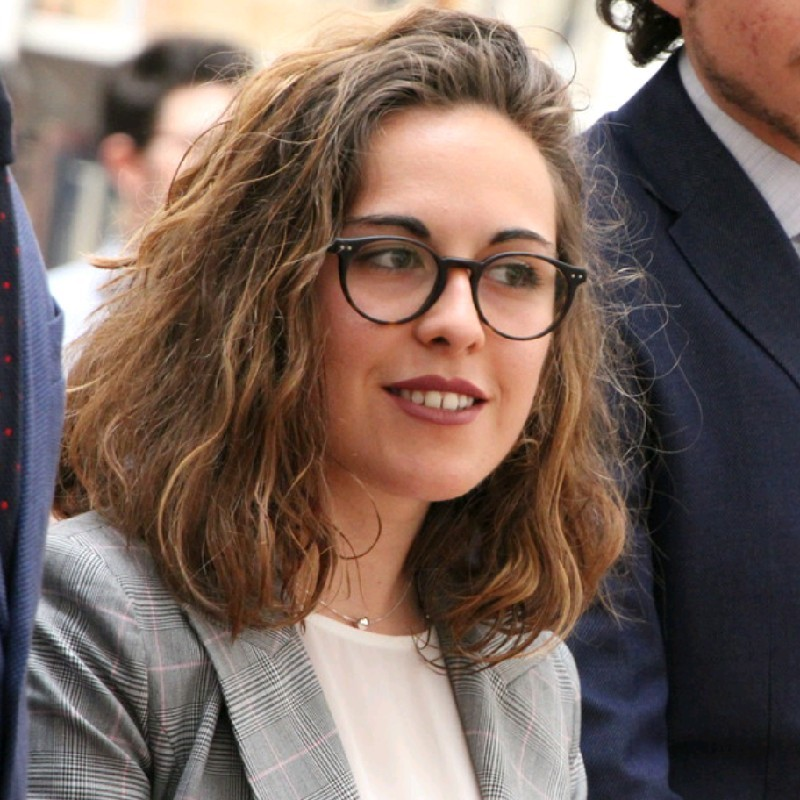
Lisa Berretti López
Doctorante PhD student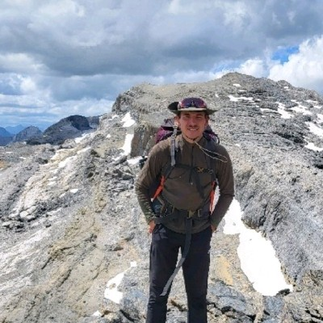
Thomas Uguen
Doctorant PhD student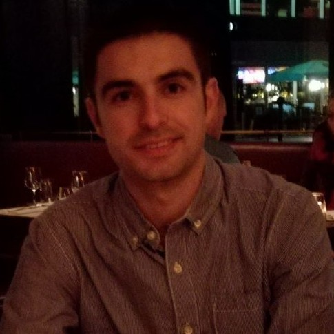
Carlos Molero Jiménez
Post-doctorant Postdoc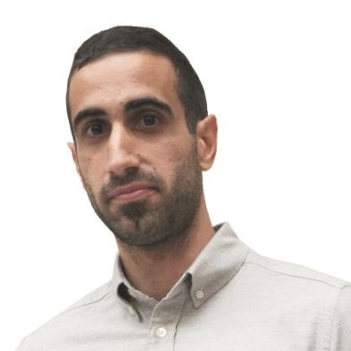
Charalampos (Haris) Stoumpos
Post-doctorant Postdoc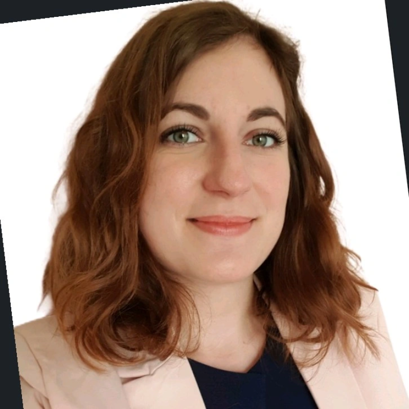
Aurélie Dorlé
Doctorante PhD student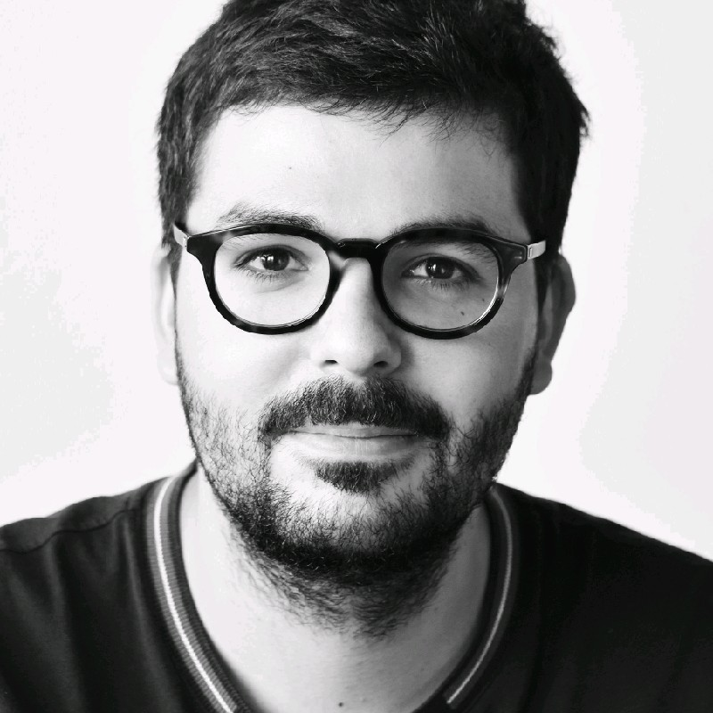
Antoine Calleau
Doctorant PhD student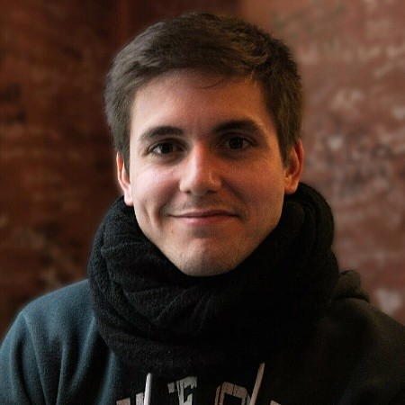
Diego Bermúdez Martín
Doctorant PhD student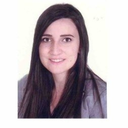
Samara Gharbieh
Doctorante PhD student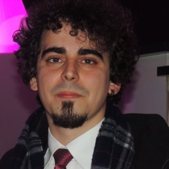
Andrea Guarriello
Post-doctorant avec Thales Alenia Space Postdoc with Thales Alenia Space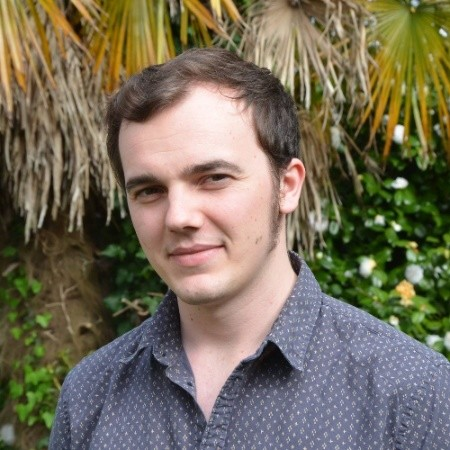
Paul Le Bihan
Doctorant PhD student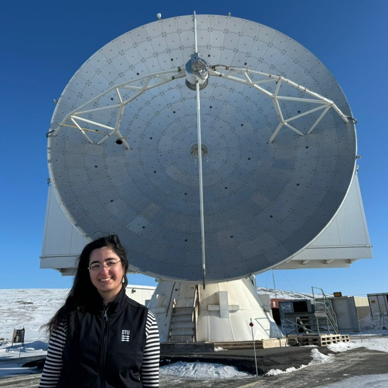
Rema Ahmid
Étudiante Master 2 Denmark Technical University Master Project from Denmark Technical University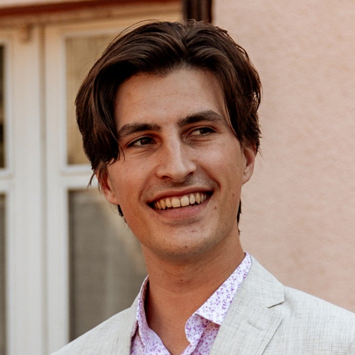
Matthieu Elineau
Doctorant PhD student
Les antennes sont des composants essentiels de notre société connectée : elles assurent la transition entre les signaux électriques et les ondes électromagnétiques. Leur conception constitue souvent un verrou technologique pour les systèmes de communication, d'observation ou de détection. Mes recherches visent à mieux comprendre les phénomènes électromagnétiques afin de développer des dispositifs plus performants, plus robustes et plus responsables, au service des besoins de notre société. Je m'interroge également à la manière d'intégrer les enjeux des transitions socio-environnementales dans les pratiques des enseignants-chercheurs et, plus largement, dans la formation au sein des écoles d'ingénieurs.
Mes travaux couvrent la physique des ondes électromagnétiques, les surfaces intelligentes et métamatériaux, les antennes pour les communications spatiales, les systèmes radar pour l'observation de la Terre et le suivi des ressources en eau, les architectures actives reconfigurables ainsi que la fabrication additive métallique 3D pour les systèmes RF spatiaux.
Retrouvez une sélection de publications représentatives ci-dessous, et l'ensemble de mes travaux sur
Google Scholar
.
Antennas are essential building blocks of our connected world, acting as transducers between electrical information and electromagnetic waves. Their design is often a technological bottleneck for communication, sensing and observation systems. My research aims to better understand the physics of electromagnetic waves in order to develop devices that are more efficient, more robust and more responsible, addressing current societal needs. I'm also interested in exploring how to integrate socio-environmental transitions into the practices of academics and researchers and, more broadly, into engineering education. This involves exploring how teaching practices and engineering curricula can evolve to better prepare future engineers for contemporary socio-environmental challenges.
My work includes electromagnetic wave physics, intelligent surfaces and metamaterials, antennas for satellite communications, radar systems for Earth observation and water monitoring, reconfigurable active architectures, and metal additive manufacturing for space RF systems.
Below is a selection of representative publications. The full body of my work is available on
Google Scholar
.
Surfaces intelligentes
& métamatériaux
Intelligent surfaces
& metamaterials
Comprendre et contrôler les ondes électromagnétiques grâce à des surfaces artificielles innovantes et des métamatériaux 3D.
Understanding and controlling electromagnetic waves through engineered surfaces and 3D metamaterials.
Contributions représentatives
Selected contributions
Observation de la Terre
& radar environnemental
Earth observation
& environmental radar
Développement d'antennes et de systèmes radar pour l'observation de la Terre, le suivi des ressources en eau et la surveillance de l'environnement.
Development of antennas and radar systems for Earth observation, water monitoring and environmental sensing.
Contributions représentatives
Selected contributions
Architectures RF spatiales
pour le NewSpace
Space RF architectures
for NewSpace
Conception d'antennes actives, de réseaux phasés et de frontaux RF pour les futures missions spatiales.
Development of active antennas, phased arrays and RF front-ends for future space missions.
Contributions représentatives
Selected contributions
Impression 3D
pour les systèmes RF
3D printing
for RF systems
Développement de nouvelles approches de fabrication additive métallique pour concevoir des composants RF plus compacts, légers et performants.
Development of metal additive manufacturing techniques for more compact, lightweight and high-performance RF components.
Contributions représentatives
Selected contributions
Transitions socio-environnementales
dans l'enseignement supérieur
Socio-environmental transitions
in higher education
Explorer comment intégrer les enjeux des transitions socio-environnementales dans les pratiques des enseignants-chercheurs et, plus largement, dans la formation au sein des écoles d'ingénieurs.
Exploring how to integrate socio-environmental transitions into the practices of academics and researchers and, more broadly, into engineering education.
Cette recherche porte notamment sur l'évolution des pratiques pédagogiques et des manières de former les ingénieur·es afin de mieux les préparer aux défis socio-environnementaux contemporains.
This work focuses on how teaching practices and engineering curricula can evolve to better prepare future engineers for contemporary socio-environmental challenges.
Projet représentatif
Representative project